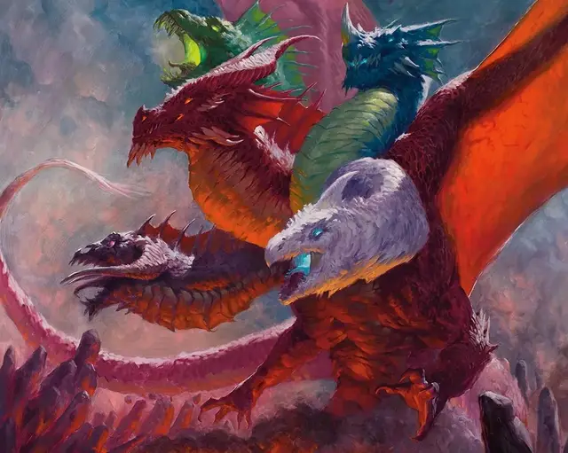

Аспект Тиамат
Aspect of Tiamat
Громадный Дракон (Цветной), хаотично-злой

Класс Доспеха 23 (природный доспех)
Хиты 574 (28к20 + 280)
Скорость 60 футов, плавая 60 футов, летая 120 футов, копая 60 футов
| мод | спас | ||
|---|---|---|---|
| СИЛ | 30 | +10 | +10 |
| ЛОВ | 14 | +2 | +11 |
| ТЕЛ | 30 | +10 | +19 |
| мод | спас | ||
|---|---|---|---|
| ИНТ | 21 | +5 | +5 |
| МДР | 20 | +5 | +14 |
| ХАР | 26 | +8 | +17 |
Навыки Восприятие +23, Запугивание +26
Иммунитет к урону кислота, огонь, холод, электричество, яд; дробящий, колющий, рубящий от немагических атак
Иммунитет к состояниям ослепление, отравление, очарование, глухота, испуг, ошеломление
Чувства истинное зрение 120 футов, пассивное Восприятие 33
Языки Общий, Драконий, Инфернальный
Опасность 30 (155000 опыта)
Бонус мастерства +9
Особенности
Цветной гнев (перезаряжается после короткого или продолжительного отдыха). Если хиты аспекта будет уменьшены до 0, её текущее общее количество хитов вместо этого становится 500, она перезаряжает своё Цветное пламя и восстанавливает все израсходованные использования Легендарного сопротивления. Кроме того, аспект теперь может использовать особенности из раздела «Мифические действия» в течение 1 часа.
Дайте группе дополнительные 155 000 опыта (всего 310 000 опыта) за победу над аспектом Тиамат после активации её Цветного гнева.
Легендарное сопротивление (5/день). Если аспект проваливает спасбросок, она может вместо этого сделать спасбросок успешным
Действия
Мультиатака. Аспект совершает одну атаку Укусом, одну атаку Когтём и одну атаку Хвостом.
Укус. Рукопашная атака оружием: +19 к попаданию, досягаемость 20 фт., одна цель. Попадание: 23 (2к12+10) колющего урона плюс 19 (3к12) урона силовым полем.
Коготь. Рукопашная атака оружием: +19 к попаданию, досягаемость 15 фт., одна цель. Попадание: 21 (2к10+10) рубящего урона. Если цель существо Огромного размера или меньше, то оно становится схваченным (Сл высвобождения 20) и опутано до тех пор, пока этот захват не закончится. Одновременно аспектом может быть схвачено только одно существо.
Хвост. Рукопашная атака оружием: +19 к попаданию, досягаемость 15 фт., одна цель. Попадание: 23 (2к12+10) дробящего урона. Если целью является существо, оно должно преуспеть в спасброске Силы Сл 27 или будете сбито с ног.
Цветное пламя (перезарядка 5–6 ). Аспект испускает разноцветное пламя 300-футовым конусом. Каждое существо в этой области должно совершить спасбросок Ловкости Сл 27. В случае провала существо получает 71 (11к12) урона, тип которого определяет аспект: кислотой, холодом, огнём, электричеством или ядом. В случае успеха существо получает половину этого урона.
Легендарные действия
Аспект Тиамат может совершать 3 легендарных действия, выбирая из вариантов ниже. Одновременно можно использовать только одно легендарное действие и только в конце хода другого существа. Аспект Тиамат восстанавливает потраченные легендарные действия в начале своего хода..
Атака. Аспект совершает одну атаку Когтем или Хвостом.
Яростный укус (стоит 2 действия). Аспект совершает одну атаку укусом. Если атака попадает по существу, цель должна преуспеть в спасброске Мудрости Сл 27, иначе она становится испуганной аспектом до конца своего следующего хода.
Мифические действия
Если способность аспекта Цветной гнев активировалась в течение последнего часа, она может использовать приведенные ниже варианты в качестве легендарных действий.
Бросок через Авернус (стоит 2 действия). Аспект выбирает целью существо, с которым она сражается. Существо должно преуспеть в спасброске Харизмы Сл 25, в случае провала получая 44 (8к10) урона психической энергией и изгоняется в Авернус (первый уровень Девяти преисподних). В начале следующего хода аспекта существо снова появляется в свободном пространстве в пределах 10 фт. от аспекта.
Цветная вспышка (стоит 3 действия). Аспект вспыхивает стихийной энергией. Каждое существо по выбору аспекта в сфере радиусом 60 фт., с центром на ней, должно совершить спасбросок Ловкость Сл 27. При провале существо получает 39 (6к12) урона, тип которого определяет аспект: кислотой, холодом, огнём, электричеством или ядом. В случае успеха существо получает половину этого урона.
Описание
Пятиглавая прародительница цветных драконов, Тиамат воплощает пороки злых драконов. После разрушения Первого Мира она жила в Девяти Преисподних — некоторые говорят, что по собственному желанию. Но другие утверждают, что она заключена там в тюрьму, чтобы наказать ее за зло, которое она совершила, когда боги пытались колонизировать Первый Мир со своими последователями.
Смертные, жаждущие власти и богатства, часто клянутся в верности Тиамат в достижении этих целей. Многие из ее последователей пытались вырвать ее из Авернуса — и потерпели неудачу, — но даже пока она остается в Девяти Преисподних, Тиамат может отправить свой аспект, чтобы проявиться на Материальном плане. Последователь, обладающий достаточной силой и гневом, а также сокровищем, достойным древних драконов, может пожертвовать всем этим, чтобы обрушить гнев королевы драконов на мир.
Аспект Тиамат имеет тело титанического дракона с пятью головами, каждая из которых имеет форму и оттенок другого цветового дракона. Каждая голова может говорить отдельно и иметь разные манеры, но все они - Тиамат. Однажды высвобожденный аспект Тиамат будет бушевать по всему миру, приобретая любое сокровище, которое она может найти, и уничтожая любое существо, которое осмеливается пересечь ее путь.